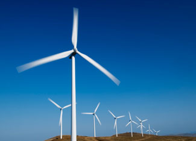

The debate has stewed for years: Do wind turbines really deserve the nickname “bird cuisinarts,” or has the problem been blown out of proportion by overly concerned wildlife conservationists?
We’re on the verge of a renewable energy revolution, and the wind industry is anxious to commence full-scale development. But conservationists are warning that more attention to wildlife impact is needed to ensure that the quest for clean power doesn’t do unintentional harm to wildlife.
There is much yet to learn about the issue - why do birds and bats collide with turbines? What can be done to avoid these collisions? Is there really a problem at all? While many studies have been conducted, they’re quickly becoming outdated. New research is underway (see “To Learn More” at the end of this article), and as we eagerly await the results, we attempted to gain a better understanding by talking to conservation and wind industry experts who have studied the evolving relationship between wind turbines and avian wildlife.
What are your views on the severity of the wind industry’s impact on birds, bats and other wildlife?
LJ: The wind industry takes any potential impacts to wildlife and its habitat very seriously. When many people think of wind turbines and bird fatalities, Altamont Pass Wind Resource Area in California usually comes to mind, where unfortunately a large number of birds have died. This facility was the first commercial wind project here in the United States and was installed without understanding that there might be impacts to the raptor population in the area. Today, we wouldn’t construct a project in that same area, and subsequent projects did a much better job at considering impacts to birds before construction began. These pre-construction studies help us better understand how to mitigate impacts and are now part and parcel of the development process.
Outside of Altamont Pass, we haven’t seen any projects that have significant impacts on birds. Unfortunately, birds collide with many things - often stationary objects - and we aren’t seeing any big mortality events at wind facilities like you see at communication towers. Even if we got 100 percent of our electricity from wind turbines, bird mortality wouldn’t be even close to that which is caused by communication towers, buildings, automobiles or even cats.
It’s a different story with bats. A significant number of bats have been killed at a location in West Virginia, which we were not expecting. We here at the American Wind Energy Association partnered with Bat Conservation International, the U.S. Fish and Wildlife Service and the National Renewable Energy Laboratory to create the Bats and Wind Energy Cooperative. We’re looking at tools such as ultrasonic sound to warn bats and direct them away from the turbines. Implementing small changes with low economic impact to a project might be the answer for some locations with high mortality rates.
What needs to happen in order to move ahead with renewable energy development, without placing further strain on wildlife?
LJ: It’s going to center around siting. I think the industry has had a good track record. We were all concerned about the impact we saw on bat populations, but we responded immediately, and the good news is we haven’t had other big issues come up. Looking ahead, we will have the Wind Turbine Guidelines Advisory Committee. It’s a federal committee composed of industry, state, conservation groups and more. They all have a stake in trying to minimize wildlife impacts and they’re putting together a national framework of voluntary guidelines for development of wind power.
At the same time, wind projects have to comply with federal regulations such as the Endangered Species Act, Migratory Bird Treaty Act and other wildlife protection laws. One of the challenges for the advisory committee is to find a way to make their recommendations for the siting guidelines fit into all of those laws.
They have a lot of work to do! But the people who are involved are putting a huge amount of time and effort into getting this right, because I think everyone understands how important wildlife-friendly wind development is.
Tell us your views on the severity of the wind industry’s impact on birds, bats and other wildlife.
AM: The Department of Interior strongly supports the development of renewable energy, including commercial wind energy. The U.S. Fish and Wildlife Service seeks to avoid or minimize impacts to wildlife and their habitats while maximizing opportunities for renewable energy development. This includes ensuring that siting, construction, and operating decisions are based on the best available and most current scientific evidence.
Bats have recently been documented to be killed in large numbers on wooded ridge tops in West Virginia and Pennsylvania, and wind development on forested ridge tops in the Appalachian Front is a specific concern for peregrine falcons and golden eagles that tend to migrate below ridge lines. Altamont Pass, Calif., where the collision problems with raptors (especially golden eagles, red-tailed hawks, American kestrels and burrowing owls) were first documented in the early 1990s, continues to kill large numbers of birds each year.
Current estimates and results from some North American studies at wind facilities indicate that collision impacts to birds are presently generally small, with perhaps a few exceptions. The industry estimates mortality at around 58,000 per year; I estimate it to be closer to 440,000 per year. The difference is due to basic flaws in the design and implementation of some of the [industry-conducted] mortality studies. These involve the duration and intensity of monitoring, as well as the size of the dead bird and bat search areas. With studies at communication towers, searches occur every morning, beginning a half hour before dawn, usually during peak periods of migration, for periods of three to four weeks. We do not see the same search protocols conducted at wind turbines.
Another potentially larger issue involves the appropriate size of the search area. With wind wake turbulence and impacts from blade tip vortices, bird and bat carcasses may be blown far beyond the current search areas (the search radius is now generally no larger than the height of the turbine, often less in size). Until a robust, scientifically rigorous cumulative impacts study is performed, we won’t know with any degree of certainty what the true level of mortality actually is.
When the industry raises issues about other sources of mortality that are estimated to be much greater than from wind facilities (such as collisions from communication towers, building windows and automobiles), the Service views that as a detraction from the issue at hand. We need to return the focus to how to avoid or minimize impacts to wildlife species and their habitats from commercial wind development. The death, for example, of one whooping crane - which may soon have to fly through a gauntlet of thousands of turbines through the prairie states during spring and fall migrations - would have a severe impact on its fragile population.
What needs to happen in order to move ahead with renewable energy development, without placing further strain on wildlife?
AM: Commercial wind development continues to grow exponentially, with more than 25,000 turbines on the U.S. landscape today, and a projected 155,000 or more turbines within the next 10 years. With rotor-swept areas approaching 4 acres in size, blade tips now exceeding 425 feet in height above ground level, and blade tips still spinning at 170 mph, the challenge only grows. Add the impacts of power line right-of-ways (power grids) to collect the energy produced from wind facilities, plus all other anthropocentric structures present on the landscape, and the challenge is huge.
As the agency responsible for protecting and managing migratory birds, bats and other endangered species, all wind developers need to be working with the Fish and Wildlife Service. Yet our recommended siting guidelines remain voluntary, resulting in inconsistent use - or lack thereof - of the guidelines on private lands. With the pending release later this year of recommendations to the Service from a federal advisory committee developing suggested improvements to our guidelines, it is hoped that industry collaboration will improve.
Fortunately, there are many outstanding minds that are working together to help solve these challenges. While there are no deterrent devices (ultrasound, infrasound, or lasers) that have shown great promise, there are some tools that may help in avoiding and minimizing adverse wildlife impacts (blade “feathering,” increased blade “cut-in” speeds, project set-backs, and more).
There is no question we must address our carbon footprint, and we must address it now. However, we cannot afford to solve one environmental problem by creating new problems that did not previously exist.
To Learn More:
Wind Turbine Guidelines Advisory Committee
Studies conducted by the National Renewable Energy Laboratory
American Wind Energy Association
The U.S. Fish and Wildlife Service
Patterns of Bat Fatalities at Wind Energy Facilities in North America
The National Audubon Society’s Official Position on Wind Power
The Grassland and Shrub Steppe Species Collaborative (GS3C)|
 ISTOCKPHOTO/DEBRA FEINMAN Scientists and the wind industry are trying to reach a consensus on wind turbines' impact on birds and bats. |
|
|